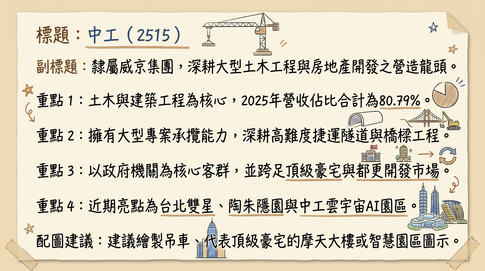
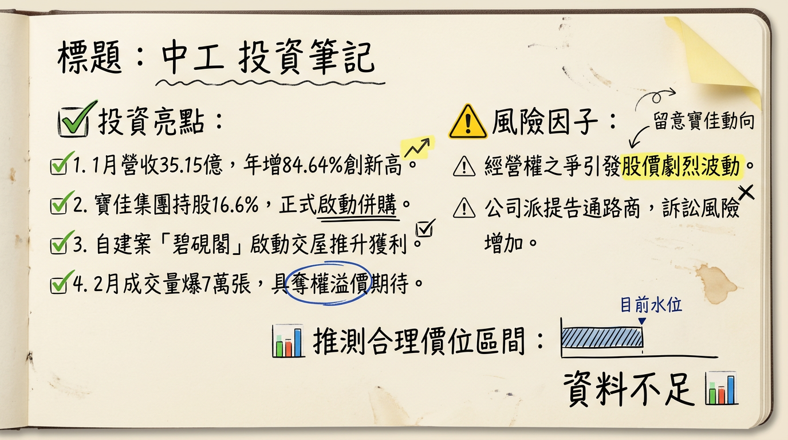

2515 中工 深度研究報告
一句話摘要
「建案入帳收割元年」與「經營權奪權溢價」雙重奏：2026 年營收預期挑戰新高，碧硯閣與雲宇宙園區為獲利爆發點。公司概覽
中工（中華工程）為台灣資深大型營造廠，隸屬威京集團。除穩健的公共工程基底外，近年轉型為「營造+開發」雙主軸，並切入高毛利的 AI 智慧廠辦市場。
營收結構（截至 2025 年底）| 業務領域 | 營收佔比 | 核心專案 |
|---|---|---|
| 土木工程 | 59.32% | 台北雙星、捷運、台 61 線改善工程 |
| 建築工程 | 21.47% | 碧硯閣、鳴森苑、社會住宅 |
| 機電工程 | 7.34% | 大型公共建設配電與機電安裝 |
| 開發/其他 | 11.87% | 中工雲宇宙 AI 園區、彰濱工業區開發、保全與人力 |
核心競爭優勢
財務分析
月營收趨勢表格（近半年）| 月份 | 營收（億元） | 月增率 MoM | 年增率 YoY | 備註 |
|---|---|---|---|---|
| 2026/01 | 35.15 | +15.57% | +84.64% | 歷史單月新高，碧硯閣入帳 |
| 2025/12 | 30.41 | +122.14% | +3.22% | 碧硯閣啟動產權移轉 |
| 2025/11 | 13.69 | -16.08% | -45.31% | 工程結算空窗期 |
| 2025/10 | 16.31 | -6.31% | -14.54% | -- |
| 2025/09 | 16.36 | -- | -12.80% | -- |
| 2025/08 | 15.11 | -- | -21.40% | -- |
- 2025 Q3 EPS： 0.09 元
- 2025 累計前三季 EPS： 0.27 元
- 2025 全年營收（自結/預估）： 207.18 億元
- 2026 預估 EPS： 1.0 - 1.2 元（隨高毛利建案入帳大幅跳升）
法說會重點（2025/12/26）
- 工程進度： 「碧硯閣」總銷 50 億，於 2026 Q1 大量認列。
- 指標案展望： 「中工雲宇宙 AI 園區」總銷近 500 億元，預計 2026 年 6 月取使照，下半年正式入帳，首波潛在成交對象包含鴻海（購置意向達 75.49 億）。
- 資金規劃： 2026 年計畫投入 80 億元 資本支出，並籌組 55 - 100 億元 聯貸案或發行可轉債（CB）。
- 管理層發言： 公司正由傳統營造轉型為「專業地產開發商」，預期 2026 年起開發業務利潤貢獻度將超越營造業務。
券商觀點
券商目標價與評等表格| 券商名稱 | 評等 | 目標價 | 2026 預估 EPS | 日期 |
|---|---|---|---|---|
| 凱基投顧 | 持有 (Hold) | 18.5 元 | 1.15 元 | 2026/02/12 |
| 統一證券 | 區間操作 | 17.0 元 | 1.08 元 | 2026/01/15 |
| Win 投資 | 中立 (過時) | 16.5 元 | 1.05 元 | 2026/02/26 |
| 玉山證券 | 偏高位階 | -- | -- | 2026/02/26 |
財報深度分析
利潤率趨勢表格| 指標 | 2025 Q3 | 2025 Q2 | 2025 Q1 | 2024 全年 |
|---|---|---|---|---|
| 毛利率 (%) | 6.31 | 8.59 | 5.92 | 6.52 |
| 營業利益率 (%) | 3.65 | 3.20 | 2.72 | 3.99 |
| 稅後淨利率 (%) | 2.76 | 2.17 | 1.85 | 3.04 |
- 存貨分析： 截至 2025 Q3，存貨週轉天數約 634.17 天，處於高水位，主因陶朱隱園去化緩慢。隨 2026 年雲宇宙園區完工，存貨將轉化為現金流。
- 財務風險： 負債比率達 66.14%，利息保障倍數僅 1.33，短期融資壓力較大。
股權異動
- 經營權之爭： 寶佳集團（華建）大舉掃貨，持股比例突破 16.6% - 20%，並將目的改為「併購」。
- 法律反制： 2026/02/24 中工告發通路商涉嫌內線交易與股價操縱，試圖以此凍結對手委託書徵求。
- 股利政策： 為保留現金應對開發與鬥爭，2025 年改發股票股利（0.503 元），2026 年預期維持低現金支出、高股票股利政策。
產業分析
台灣主要營造開發商比較（2025 數據）| 公司 | 2025 營收 (億) | 毛利率 (%) | EPS (元) | 2026/01 營收成長 |
|---|---|---|---|---|
| 中工 (2515) | 207.76 | 約 10.5% (估) | 0.35-0.50 (估) | +84.6% |
| 達欣工 (2535) | 280.5 | 11.2% | 3.5 - 4.2 | +5.2% |
| 欣陸 (3703) | 315.4 | 12.8% | 1.8 - 2.1 | +2.1% |
| 皇昌 (2543) | 125.0 | 14.5% | 4.5 - 5.5 | +12.5% |
近期催化劑
- 利多：
2. 雲宇宙 AI 園區預售進度超越 20%，傳鴻海將大手筆購置。
3. 陶朱隱園成交資訊若再出現，具備強大處分利益與話題性。
- 利空：
2. 經營權爭奪導致董事會決策僵化。
3. 負債比 66% 在升息環境下之利息成本壓力。
⭐ 成長動能時間軸
- 2026 / Q1： 「碧硯閣」大規模交屋入帳（認列主力），1 月營收已創新高。
- 2026 / 03： 京華城爭議判決。若無虞，則京華廣場（2027 完工）之進度威脅消除。
- 2026 / 05： 股東常會。經營權之爭定勝負，可能引發股價最後一波「奪權溢價」。
- 2026 / 06： 「中工雲宇宙 AI 園區」取得使用執照。
- 2026 / Q3-Q4： 雲宇宙案產權移轉。下半年營收有望因大宗土地/建物銷售再創高峰。
- 2026 / 全年： 彰濱工業區續推 35.9 公頃銷售，穩定挹注現金流。
2026 展望
- 成長動能： 進入建案入帳高峰期，營運模式由低毛利營造轉為中高毛利地產開發，EPS 具備挑戰 1.2 元 以上之潛力。
- 風險： 法律訴訟（經營權、京華城）可能干擾公司運作；勞動力短缺與碳費支出恐壓縮後續工程毛利。
投資結論
本報告由 AI 自動產生，資料來源為公開網路資訊，僅供參考，不構成投資建議。產生時間：2026-03-02 06:19
📊 資訊卡


